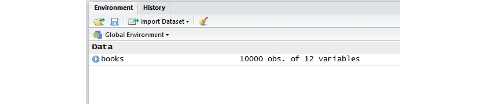

This is distributed under a https://creativecommons.org/licenses/by/4.0/.
Workshop code for this module is at https://raw.githubusercontent.com/ciakovx/ciakovx.github.io/master/DataExploration_workshopcode.R
In order to use your data in R, you must import it and turn it into an R object. There are many ways to get data into R.
data.frame() and specify your variables.readLines() function)read.table() function or readr package)xlsx package)googlesheets package)haven package)RMySQL package)rvest package.twitteR package, or Altmetrics data with rAltmetric, or World Bank’s World Development Indicators with WDI.readrR has some base functions for reading a local data file into your R session–namely read.table() and read.csv(), but these have some idiosyncrasies that were improved upon in the readr package, which is installed and loaded with tidyverse. You can either load tidyverse, which will automatically load readr, or you can load readr individually.
library(tidyverse)
# or
library(readr)For this session, we will be reading a CSV from a web connection rather than saving the data to our computer and loading it into R. However, to do that, see the below section on Loading data from a local file.
To get our sample data into our R session, we will use the read_csv() function and connect to a CSV saved on my GitHub using the url() function.
books_url <- url("https://raw.githubusercontent.com/ciakovx/ciakovx.github.io/master/RBasics_files/data/raw/books.csv")
books <- readr::read_csv(books_url)
booksYou will notice a warning message telling you that because you did not specify the data type for each column, read_csv() parsed it automatically. For example, LOCATION was parsed as a col_character() field. You should now have an R object called books in the Environment pane: 10000 observations of 12 variables. We will be using this data file in the next module.

The working directory is the location on your computer R will use for reading and writing files. Use getwd() to print your current working directory to the console. Use setwd() to set your working directory. There are two important points to make here;
\. However, in R, you must use a forward slash /. I usually copy and paste from the Windows Explorer (or Mac Finder) window directly into R and use the find/replace (Ctrl/Cmd + F).# set working directory using a forward slash /
setwd("C:/Users/iakovakis/Desktop/fsci_AM4")
# print working directory to the console
getwd()
## [1] "C:/Users/iakovakis/Desktop/fsci_AM4"./ to represent the working directory. So "./data" is the same as "C:/Users/iakovakis/Documents/fsci_AM4/data"TRY IT YOURSELF
# set your working directory to wherever you saved the data files for this webinar
setwd("C:/Wherever you saved the files/fsci_AM4_files")
# read the books file into your R environment and assign it to books
# not all of these arguments are necessary, but I'm putting them here for example purposes
books <- readr::read_csv("./data/raw/books.csv")R Studio has a data importing wizard in the Environment Pane (upper right): Import Dataset:
I never use this. I type the read_csv() function directly in my script files, as it gives me more control over the arguments and I am not limited to the choices R Studio gives me.
After you read in the data, you want to examine it not only to make sure it was read in correctly, but also to gather some basic information about it. Here I am working with the data file that was provided to you during the webinar session. Read this file by saving it to your computer, setting your working directory, and typing the expression found in the TRY IT YOURSELF exercise at the end of Section 2.
# Look at the data in the viewer
View(books)
# Use dim() to obtain the dimensions
dim(books)
## [1] 10000 12
# print the column names
names(books)
# nrow() is number of rows.
nrow(books)
## [1] 10000
ncol(books)
## [1] 12
# Use head() and tail() to get the first and last 6 observations
# View more by adding the n argument
head(books)
head(books, n = 10)The map() series of function from purrr is a useful way of running a function on all variables in a data frame or list. Here we call class() on books using map_chr(), which will return a character vector of the classes for each variable.
map_chr(books, class)
## CALL...BIBLIO. X245.ab X245.c LOCATION
## "character" "character" "character" "character"
## tot_chkout LOUTDATE SUBJECT ISN
## "integer" "character" "character" "character"
## CALL...ITEM. X008.Date.One BCODE2 BCODE1
## "character" "integer" "character" "character" The dollar sign $ is used to distinguish a specific variable (column, in Excel-speak) in a data frame:
# print the first six book titles
head(books$title)
## [1] "NAEP 1998 writing state report for Texas /"
## [2] "The World almanac and book of facts."
## [3] "McGraw-Hill reading."
## [4] "TASP Texas Academic Skills Program policy manual."
## [5] "The control room :~how television calls the shots in presidential elections /"
## [6] "IEEE transactions on information technology in biomedicine :~a publication of the IEEE Engineering in Medicine and Biology Society."
# print the mean number of checkouts
mean(books$tot_chkout)
## [1] 2.2847unique(), table(), and duplicated()Use unique() to see all the distinct values in a variable:
unique(books$LOCATION)
## [1] "clstk" "cltxd" "clfhd" "cljuv" "clusd" "cljre" "clref" "clua " ...Take that one step further with table() to get quick frequency counts on a variable:
table(books$LOCATION)
## clcdr clchi clcir clcre clfhd clfyi clids cljre cljuv
## 135 410 18 10 898 1 24 270 430
# you can use it with relational operators
# Here we find that 9 books have over 50 checkouts
table(books$TOT.CHKOUT > 50)
## FALSE TRUE
## 9991 9duplicated() will give you the a logical vector of duplicated values.
# The books dataset doesn't have much duplication, we'll create a new vector to test this.
mydupes <- tibble("identifier" = c("111", "222", "111", "333", "444"),
"birthYear" = c(1980, 1940, 1980, 2000, 1960))
mydupes
## identifier birthYear
## 1 111 1980
## 2 222 1940
## 3 111 1980
## 4 333 2000
## 5 444 1960
# The second 111 is duplicated
duplicated(mydupes$identifier)
## [1] FALSE FALSE TRUE FALSE FALSE
# you can put an exclamation mark before it to get non-duplicated values
!duplicated(mydupes$identifier)
## [1] TRUE TRUE FALSE TRUE TRUE
# or run a table of duplicated values
table(duplicated(mydupes$identifier))
## FALSE TRUE
## 4 1
# which() is also a useful function for identifying the specific element
# in the vector that is duplicated
which(duplicated(mydupes$identifier))
## [1] 3You may also need to know the number of missing values:
# How many total missing values?
sum(is.na(books))
## [1] 5591
# Total missing values per column
colSums(is.na(books))
# use table() and is.na() in combination
table(is.na(books$isbn))
## FALSE TRUE
##2893 1107
# Return only observations that have no missing values
booksNoNA <- na.omit(books)TRY IT YOURSELF
View(books) to examine the data frame.table() function to get frequency counts of this variabletable() and is.na() to find out how many NA values are in the ISN variable.which() and is.na() to find out which rows are NA in the ISN variable. What happened?which() and !is.na() to find out which rows are not NA in ISN. (!is.na() is the same thing as complete.cases())!is.na() to include only those values that are not NA.summary(books$TOT.CHKOUT). What can we infer when we compare the mean, median, and max?hist() will print a rudimentary histogram, which displays frequency counts. Call hist(books$TOT.CHKOUT). What is this telling us?R contains a number of operators you can use to compare values. Use help(Comparison) to read the R help file. Note that two equal signs (==) are used for evaluating equality (because one equals sign (=) is used for assigning variables).
Sometimes you need to do multiple logical tests (think Boolean logic). Use help(Logic) to read the help file.
TRY IT YOURSELF
8 == 8
8 == 16
8 != 16
8 < 16
8 == 16 - 8
8 == 8 & 8 < 16
8 == 8 | 8 > 16
8 == 9 | 8 > 16
any(8 == 8, 8 == 9, 8 == 10)
all(8 == 8, 8 == 9, 8 == 10)
8 %in% c(6, 7, 8)
8 %in% c(5, 6, 7)
!(8 %in% c(5, 6, 7))
if(8 == 8) {print("eight equals eight")}
if(8 > 16){
print("eight is greater than sixteen")
} else {
print("eight is less than sixteen")
}We are now entering the data cleaning and transforming phase. While it is possible to do much of the following using Base R functions (in other words, without loading an external package) dplyr makes it much easier. Like many of the most useful R packages, dplyr was developed by http://hadley.nz/, a data scientist and professor at Rice University.
It is often necessary to rename variables to make them more meaningful. If you print the names of the sample books dataset you can see that some of the vector names are not particularly helpful:
# print names of the books data frame to the console
names(books)
## [1] "CALL...BIBLIO." "title" "X245.c" "LOCATION" "tot_chkout" "LOUTDATE" "SUBJECT" "ISN" "CALL...ITEM." "X008.Date.One" "BCODE2" "BCODE1" There are many ways to rename variables in R, but I find the rename() function in the dplyr package to be the easiest and most straightforward. The new variable name comes first. See help(rename).
# rename the X245.ab variable. Make sure you return (<-) the output to your
# variable, otherwise it will just print it to the console
books <- dyplr::rename(books,
title = X245.ab)
# rename multiple variables at once
books <- dyplr::rename(books,
author = X245.c,
callnumber = CALL...BIBLIO.,
isbn = ISN,
pubyear = X008.Date.One,
subCollection = BCODE1,
format = BCODE2)
booksSide note: where does X245.ab come from? That is the MARC field 245|ab. However, because R variables cannot start with a number, R automatically inserted and X, and because pipes | are not allowed in variable names, R replaced it with a period.
R does this automatically when you use read_csv, but sometimes you need to force it. The clean_names() function from janitor can be used to clean names of data frames. As per the help file, “Resulting names are unique and consist only of the _ character, numbers, and letters.”
# clean_names() can be used for data frames
books <- janitor::clean_names(books)
books
# make_clean_names() can be used for vectors
my_messy_names <- c("245|ab", "1.-2", "space bar")
janitor::make_clean_names(my_messy_names)
## [1] "x245_ab" "x1_2" "space_bar"It is often necessary to recode or reclassify values in your data. For example, in the sample dataset provided to you, the sub_collection (formerly BCODE1) and format (formerly BCODE2) variables contain single characters.
You can do this easily using the recode() function, also in the dplyr package.
# first print to the console all of the unique values you will need to recode
unique(books$sub_collection)
## [1] "u" "-" "j" "r" "b" "a" "s" "c" "t" "z"
# Use the recode function to assign them.
# Unlike rename, the old value comes first here.
books$sub_collection <- dyplr::recode(books$sub_collection,
"-" = "general collection",
u = "government documents",
r = "reference",
b = "k-12 materials",
j = "juvenile",
s = "special collections",
c = "computer files",
t = "theses",
a = "archives",
z = "reserves")
books TRY IT YOURSELF
unique(books$format) to see the unique values in the format columndyplr::recode() to rename the format values according to the following codes. You must put 5 and 4 in quotation marks.In the same way we used brackets to subset vectors, we also use them to subset dataframes. However, vectors have only one direction, but dataframes have two. Therefore we have to use two values in the brackets: the first representing the row, and the second representing the column: [[row, column]].
When using tibbles, single brackets will return a tibble, but double brackets will return the individual vectors or values without names.
# subsetting a vector
c("do", "re", "mi", "fa", "so") [1]
# subsetting a data frame:
# pull a single variable into a tibble with names
books[5, 2]
## # A tibble: 1 x 1
## X245.ab
## <chr>
## 1 The control room :~how television calls the shots in~
# pull out a single variable without names
books[[5, 2]]
## [1] "The control room :~how television calls the shots in presidential elections /"
# use names to pull data
books[[2, "title"]]
## [1] "The World almanac and book of facts."
# return the second value in multiple columns
books[2, c("title", "format", "sub_collection")]
## title format subCollection
## 2 The race for consciousness / book general collection
# leave the row space blank to return all rows. This will create
# a tibble of all titles.
myTitles <- books[, "title"]
# to return a character vector, use double brackets. The comma is then unnecessary.
myTitles_vec <- books[["title"]]You can also use the relational operators (see above) to return values based on a logical condition. Below, we use complete.cases() to subset out the NA values. This function evaluates each row and checks if it is an NA value. If it is not, a TRUE value is returned, and vice versa. Since the column space is blank in the brackets [row, column], it will return all columns.
completeCallnumbers <- books[complete.cases(books$callnumber), ]filter() in the dplyr packageSubsetting using brackets is important to understand, but as with other R functions, the dplyr package makes it much more straightforward, using the filter() function.
# filter books to return only those items where the format is books
booksOnly <- dyplr::filter(books, format == "book")
# use multiple filter conditions,
# e.g. books to include only books with more than zero checkouts
bookCheckouts <- dyplr::filter(books,
format == "book",
tot_chkout > 0)
# How many are there?
# What percentage of all books have at least one checkout?
nrow(bookCheckouts)
## [1] 4267
nrow(bookCheckouts)/nrow(booksOnly) * 100
## [1] 61.10554
# 61%...not bad :-)
library(stringr)
# use the str_detect() function from the stringr package to return all
# books with the word "Science" in the SUBJECT variable, published after 1999
scienceBooks <- dyplr::filter(books,
format == "book",
stringr::str_detect(subject, "Science"),
pubyear > 1999) TRY IT YOURSELF
unique(format) and unique(sub_collection) to confirm the values in each of these fields.format books. Use the table() function to see the breakdown by sub_collection. Which sub-collection has the most items with 20 or more checkouts?format books and sub_collection juvenile materials. What is the average number of checkouts tot_chkout for juvenile books?The select() function allows you to keep or remove specific variables. It also provides a convenient way to reorder variables.
# specify the variables you want to keep by name
booksTitleCheckouts <- dplyr::select(books, title, tot_chkout)
# specify the variables you want to remove with a -
books <- dyplr::select(books, -call_item)
# reorder columns, combined with everything()
booksReordered <- dyplr::select(books, title, tot_chkout, loutdate, everything())The arrange() function in the dplyr package allows you to sort your data by alphabetical or numerical order.
booksTitleArrange <- dyplr::arrange(books, title)
# use desc() to sort a variable in descending order
booksHighestChkout <- dyplr::arrange(books, desc(tot_chkout))
# order data based on multiple variables (e.g. sort first by checkout, then by publication year)
booksChkoutYear <- dyplr::arrange(books, desc(tot_chkout), desc(pubyear))The mutate() function allows you to create new variables.
# use the str_sub() function from the stringr package to extract the first character of the callnumber variable (the LC Class)
library(stringr)
booksLC <- mutate(books
, lc_class = str_sub(callnumber, 1, 1))The Pipe Operator %>% is loaded with the tidyverse. It takes the output of one statement and makes it the input of the next statement. You can think of it as “then” in natural language. So in the following example, the books tibble is first loaded, then the format is filtered to include only books, then only the title and tot_chkout columns are selected, and finally the data is rearranged from most to least checkouts.
myBooks <- books %>%
dyplr::filter(format == "book") %>%
dyplr::select(title, tot_chkout) %>%
dyplr::arrange(desc(tot_chkout))TRY IT YOURSELF
Experiment with different combinations of the pipe operator.
group_by() and summarize() are two more powerful dplyr functions. Use group_by() to cluster the dataset together in the variables you specify. For example, if you group by LC Call number class, then you can sum up the total number of ebook user sessions per call number class using summarize(). summarize() will collapse many values down into a single summary statistics.
Here is an example using the booksLC data frame created above.
# First, create the grouped variable
byLC <- group_by(booksLC, lc_class)
# Then, summarize by User.Sessions
checkouts_byLC <- summarize(byLC, total_checkouts = sum(tot_chkout))
# Arrange it
checkouts_byLC <- dyplr::arrange(checkouts_byLC, desc(total_checkouts))We can use the %>% operator to do both these operations at the same time.
checkouts_byLC <- byLC %>%
summarize(total_checkouts = sum(tot_chkout)) %>%
dyplr::arrange(desc(total_checkouts))The top 5 are:
checkouts_byLC$lc_class[1:5]We may also want to see the total number of books in each call number class, and also calculate the mean user sessions per class:
n() to sum up the total number of ebooks per call number class. Add it as a column called count.sum(User.Sessions) to add up the cumulative total user sessions per call number class. Add it as a column called totalSessions.mean(User.Sessions) to calculate the mean user sessions per call number class. Add it as a column called avgSessions.byLCSummary <- byLC %>%
summarize(
count = n()
, total_checkouts = sum(tot_chkout)
, avg_checkouts = mean(tot_chkout)) %>%
dyplr::arrange(desc(avg_checkouts))dplyr at https://dplyr.tidyverse.org/.library(dplyr), run vignette("dplyr") to read an extremely helpful explanation of how to use it.